Perplexity and Intrinsic Dimensionality: Non-Global Perplexities
April 9, 2018
Source:vignettes/articles/idp-class.Rmd
idp-class.RmdThis article retains its original experiments and examples. For current package usage, see the usage guide.
See part 1 for some theory, and part 2 for the application of a global IDP in t-SNE.
Introduction
We’ve see that the Intrinsic Dimensionality Perplexity does a decent
job at picking out a single global perplexity for t-SNE. But in the previous discussion, we saw some hints that
there might be multiple intrinsic dimensionalities lurking in some
datasets (most notably, coil20) which would imply multiple
perplexities might produce better results in some cases. Locally-varying
perplexities is a suggestion raised in How to Use t-SNE
Effectively for reproducing global topologies, although this point
is not pursued. The only other approach I am aware of is in multi-scale
JSE which avoids the problem by applying multiple perplexities at
once and averaging the resulting probability matrices.
An obvious extension of the correlation dimension approach to generate different perplexities, is to average the correlation dimension over subsets of the entire dataset.
Global IDP
First, let’s recap our current approach. For each point in the dataset, we calculate the un-normalized input weight matrix, \mathbf{V}, which is associated with a perplexity, U. From there the soft correlation dimension for point i and perplexity U, D_{i, U}, can be written as:
\delta_{i, U} = \frac{2}{V_i} \left\{ \sum_{j}^{N} v_{ij} \left[ \log \left( v_{ij} \right) \right] ^ 2 -\frac{1}{V_i} \left[ \sum_{j}^{N} v_{ij} \log \left( v_{ij} \right) \right]^2 \right\}
where N is the number of observations in the dataset, v_{ij} is the element at \mathbf{V}\left[i, j\right], and V_{i} is the sum of the ith row of \mathbf{V}.
The correlation dimension associated with the entire dataset for the given perplexity is just the mean average of the individual estimates:
\hat{\delta}_{U} = \frac{1}{N} \sum_{i}^{N} \delta_{i,U}
The estimate of the intrinsic dimensionality, D, is the maximum value that the correlation dimension attains as the perplexity is varied.
D = \max_{U} \hat{\delta}_U The IDP is then:
\DeclareMathOperator*{\argmax}{arg\,max} IDP = \argmax_{U} \hat{\delta}_U
Class IDP
If we partition each observations of the dataset into classes, then the correlation dimension for a class, C, can be defined as the average over the observations in C:
\hat{\delta}_{C, U} = \frac{1}{\left\vert{C}\right\vert} \sum_{i \in C} \delta_{i,U}
We can then calculate intrinsic dimensionalities for each class and separate IDPs. Note that the definition of \delta_{i,U} hasn’t changed. We still use the entire dataset to produce the desired perplexity, so the other parts of the dataset still make their presence felt via \delta_{i,U} even if they aren’t involved in the summation.
That’s all very straightforward in principle. Practically, we need to:
- Partition the dataset into classes. This is not necessarily easy,
but is a pretty generic problem. For the purposes of the rest of this
discussion I propose that we cheat. For a majority of the datasets that I usually study with
smallvis, they have already been partitioned into classes, that I use to color the output. For example, themnistdataset has ten different classes, based on the digit from 0 to 9 that they represent. And conceptually it seems very appealing to be able to assign one perplexity to the0s and a different perplexity to the9s and so on, to reflect the way they cluster in the input space. - Have an implementation of the perplexity calibration routine that
allows for a vector of perplexities, one for each observation. How to Use t-SNE
Effectively notes that there “may not be one perplexity value that
will capture distances across all clusters”, but laments that “sadly
perplexity is a global parameter”. UNTIL NOW. Surprise! Yes, while I
haven’t documented this fact (except here), instead of using a single
value, you can provide a vector of perplexities to
smallvis, one per point in the dataset. I added the feature entirely for this work on intrinsic dimensionality, and it may be entirely useless.
Obviously, it’s not desirable that looking at local perplexities
defined in this way can only work if the datasets have been
pre-partitioned into convenient classes. The frey faces
dataset for example, doesn’t have any classes associated with it, so we
can’t be use it. And one of the reasons to do dimensionality reduction
for the purposes of visualization is to uncover the structure that would
let us partition the data into classes in the first place.
For now, we can acknowledge that we will want a better way of using the input data itself to determine a suitable perplexity for a given observation, and see how well the pre-determined categories work, which may provide a rough guide to how much improvement we can expect to see by deviating from a global perplexity. Dimensionalities and perplexities determined by this method will be referred to as class dimensionality and class IDP.
We’ll look at some class dimensionalities and t-SNE results after a not-so brief detour.
Local IDP
A blindingly obvious solution to the problem of how to partition the dataset is to observe that the ultimate form of partitioning into classes would be to put each point into its own class of one. Then there’s no need to do any averaging: every point gets its own perplexity associated with the maximum value of \delta_{i,U}. I’ll refer to these estimates as the local intrinsic dimensionality and the local IDP.
Seems simple, but individual estimates of the correlation dimension are very noisy, and the “soft” nature of the Gaussian means that edge effects are prevalent.
Gaussian
Rather than just take my word for it, let’s visualize what the variability of the local correlation dimension is like. Below are two plots for individual points taken from a 1000-point 2D Gaussian. The left hand one is taken from the center of the distribution, while the right hand one is taken from the edge:
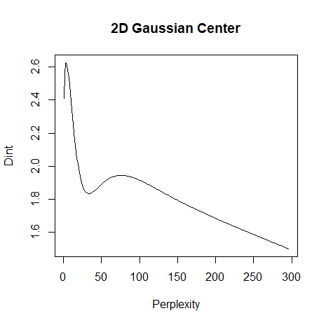 |
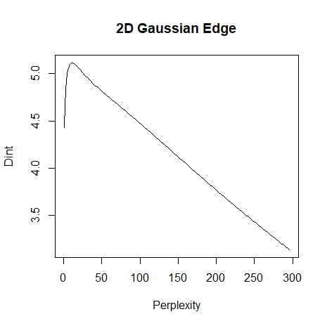 |
Most obviously, the center point’s plot shows a second maxima, which is just due to the random distribution of points creating an anomalously dense region. The maximum values of dimensionality are also clearly quite variable. The center point reports a maximum intrinsic dimensionality of 2.63, at perplexity 8, while the edge point reports a maximum intrinsic dimensionality of 5.12 at perplexity 15. This quite different from the result averaged over all the points, which reports a dimensionality of 2.12 at perplexity 43. Clearly, we should treat dimensionality curves (and their associated maximum and perplexities) with some caution.
To get a feel for how the dimensionality values vary across a dataset, here’s a plot of the 2D Gaussian, with each point colored by its intrinsic dimensionality at a perplexity of 43, which is the value that corresponded to the maximum average dimensionality over all points:
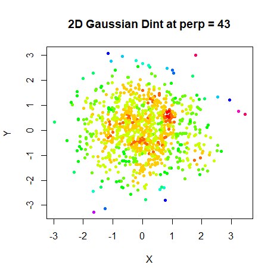 |
Dimensionalities of around 1.2 are associated with the red points found in clumps in the center. These tend to under-estimate the true intrinsic dimensionality. The blue and purple points correspond to high dimensionalities of 4-5.5. The yellow and green points are at around 2-2.5. So not only do we see edge effects where the correlation dimension is too high, we can also expect some areas of increased density in the middle of the plot to under-report the correlation dimension. That’s quite a lot of variance in the correlation dimension.
Suitably forewarned, let’s go ahead and see what happens if we estimate the intrinsic dimensionality for each point separately. Here’s the same 2D Gaussian. The plot on the left colors the points by their intrinsic dimensionality estimate, and the plot on the right colors the points by the perplexity:
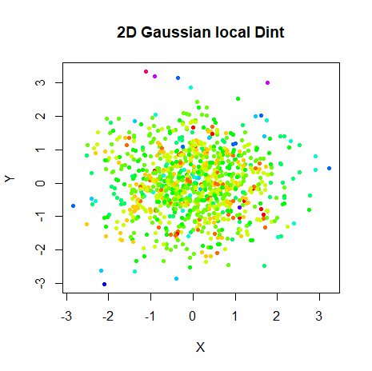 |
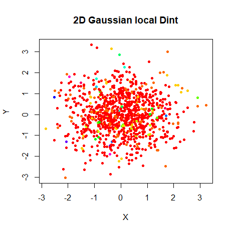 |
For the left-hand (dimensionality) plot, the yellow indicates an intrinsic dimensionality of around 1.5, green is around 2.3 while the blue and purple are around 5-6, and again these occur at the edges of the distribution.
And what of the pointwise IDP values that result? On the right hand side plot, we can see the vast majority of points are red, which are are low perplexities of around 5-10, while the very few blue and purple points are around 100-120. It’s interesting that the very outlying points aren’t the highest perplexity points, but are around 15-30. So the edge effects do lead to an overestimate of intrinsic dimensionality, but the effect on perplexity isn’t quite as obvious.
Here’s some plots of the relationship between the maximum intrinsic dimensionality and the perplexity for the 2D Gaussian (on the left) and a 100D Gaussian with 500 points (on the right), and then the same data as a histogram of the distribution of IDPs:
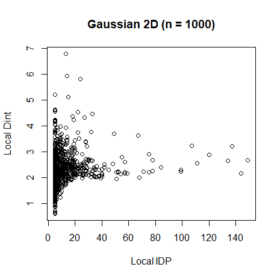 |
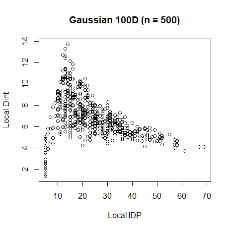 |
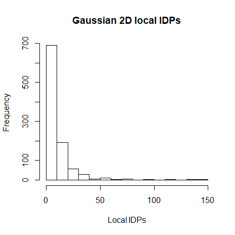 |
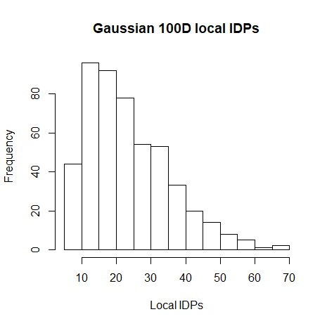 |
There would seem to be a general inverse relationship between the intrinsic dimensionality estimate and the perplexity, but also that low intrinsic dimensionalities can result in both high and low perplexities.
Now let’s see the effect of using multiple perplexities on the 100D Gaussian t-SNE result. Below on the left is the result that we first saw in the previous discussion on a global IDP. On the right is result of using the local IDPs. Points are colored by perplexity:
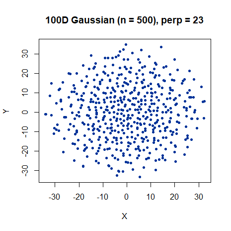 |
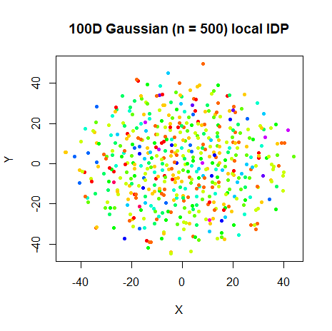 |
The points are colored by the perplexity that was chosen for them. Red points indicate a perplexity of around 5, and the dark blue and purple points show a perplexity of 45-60. The overall shape isn’t changed, but the pattern of perplexities doesn’t show the same structure as for the 2D Gaussian. Hardly surprising, as we would expect to see this squashing of points that belong on the edge of a high-dimensional Gaussian ending up elsewhere in 2D where there is much less space.
In the high-dimensional Gaussian case then, the use of local IDPs hasn’t had much effect. Time for a more visually distinct test case.
Swiss Roll
The Swiss Roll was well-characterized by the global IDP, with the 2D and 3Dish nature of the data being clearly indicated by two maxima on the dimension plot.
Let’s see what the local dimensionalities and IDPs look like
projected onto the unrolled Swiss Roll. I unrolled this using Geodesic MMDS with k = 11, which is
the value of the IDP, and it worked very well.
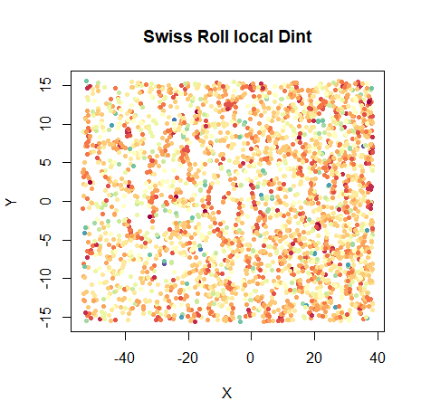 |
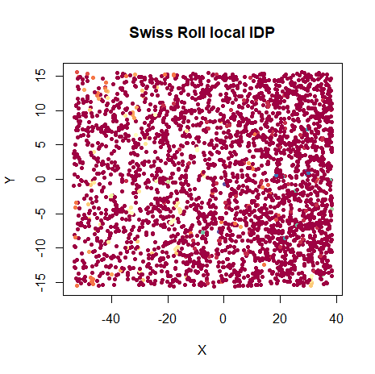 |
The color scheme for the left hand plot is the “Spectral” ColorBrewer palette.
The left-hand side of the plots are the points that used to be on the outside of the Roll and the right-hand side are the points that were originally in the center of the roll.
For the intrinsic dimensionality plot, the red points show dimensionalities of around 1. The orange and yellow points are closer to 1.5-3. There are a few blue point with a dimensionality of around 4-4.2 (light blue).
For the right hand plot the IDPs are remarkably uniform. The dark red indicates perplexities of around 5-15 which is around the global IDP of 11 that did quite well in unfolding the Swiss Roll. There are a few orange and blue points with anomalously high perplexities of around 100-130 and 250-300 respectively, but they are quite hard to pick out. As the histogram of the local IDP values below shows, the majority of the IDPs are very low (the median IDP is 6):
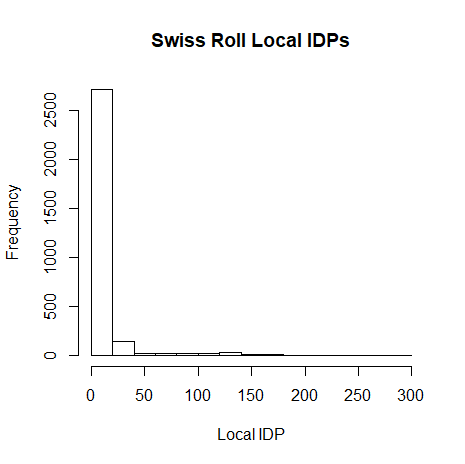 |
Why are some of the IDPs anomalously high? Heres a local correlation dimension plot for a point on the Swiss Roll which has a local IDP of 233:
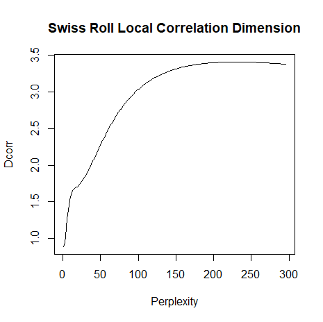 |
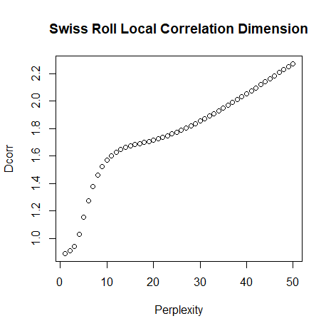 |
The left hand plot shows the plot over the full range and we can see that there is a maximum out at perplexity 233, but there’s also some indication of a lower-perplexity maximum that we would usually associate with the unfolded roll. The right hand plot shows a zoomed-in view on that region with the actual calculated values plotted as points. Unfortunately, even though there’s a region where the increase in correlation dimension levels out, there’s no strict maximum there.
There aren’t that many of these points with erroneously large perplexities, though. Perhaps we can just get away with it? Let’s see how well ASNE (which is more suitable than t-SNE for the low-dimensional Swiss Roll) does with these perplexities. Will we get any unrolling? Apart from the perplexities, we’ll use the same settings that got reasonable results with a global perplexity of 11.
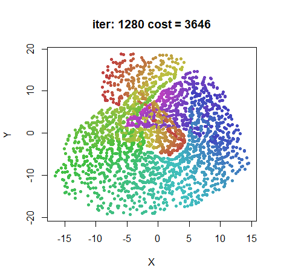 |
Oh dear. There’s some unfolding apparent, but clearly the larger perplexities have introduced enough long range structure to see the roll beginning to fold. That is enough evidence for now that local IDPs that are based on per-point estimates of intrinsic dimensionality aren’t reliable. For now we’ll turn our attention to per-class correlation dimensions that can take advantage of averaging to ameliorate edge effects.
Class IDP: Synthetic Data
Time to look at some datasets where we can calculate the class IDP. Only a couple of the synthetic data sets can be split into classes that provide something interesting. We won’t look at the linked ring data from the previous discussion, for example, because although they consist of two separate rings (and hence two classes), they are identical objects in identical environments, so the class dimensionality plots are identical to the full dimensionality plot.
In the following dimensionality plots, the specific dimensionality belonging to a class or cluster will have its line colored according to the color of the cluster in any PCA or t-SNE plot of the data itself. The original entire-dataset result is also shown in black and is the same as the one presented in the dimensionality plots in the previous part of this discussion. I’ve thickened the colored lines that represent new results to stand out more.
Subset Clusters
The subset clusters dataset from How to Use t-SNE Effectively consists of two super-imposed Gaussian distributions, but one has a much smaller standard deviation than the other (50 times smaller). t-SNE tends to reduce the disparity in the spread of the clusters. Below on the left is the PCA of the dataset, which clearly shows that the blue cluster is the small one and the yellow cluster is the big one. On the right is the class dimensionality plot.
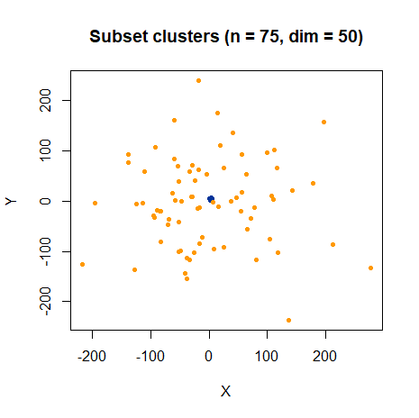 |
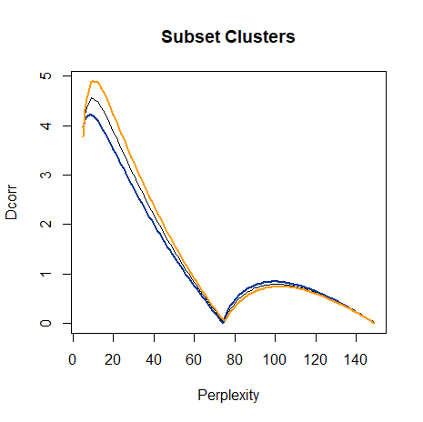 |
Despite the different in spread, the individual dimensionalities are very similar. The larger yellow cluster has a class IDP of 9, while the smaller blue cluster has a class IDP of 8. The global IDP is 9, so this dataset doesn’t seem to indicate any requirement to use non-global perplexities. Instead, I refer you to the global IDP result.
Two Clusters
Consider two 100D Gaussians of 600 points each, shown here via PCA:
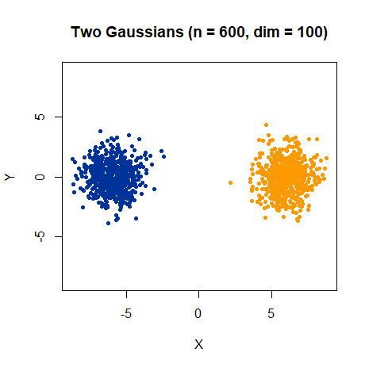 |
As shown here, they are separated by 12 distance units. Probably at that separation, for typical perplexities, the two clusters don’t “sense” each other’s presence. I would expect that the class dimensionality plot and class IDP would match the result of looking at either Gaussian in isolation.
But as we reduce the inter-cluster separation, and the overlap increases, we would expect to see some changes to the dimensionality and the resulting IDP. Below is a plot of the yellow cluster’s class dimensionalities as the separation increases from 1(red curve) to 12 (violet). Intermediate distances are shown in intermediate rainbow colors.
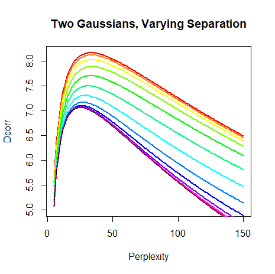 |
The dimensionality plot for the yellow Gaussian cluster on its own is shown as a thin black line. It’s hard to see because it is effectively coincident with the separation 12 (violet) curve. At separation 12, the Gaussians are independent of each other and the dimensionality plot is not affected by the presence of the other cluster. But at lower separations, we start to see the dimensionality curve show an increase in the correlation dimension estimate. The discussion of the linked rings data in the previous discussion showed a similar effect.
The class IDP is also affected by the presence of the other cluster. Here’s a plot of how the class IDP is affected by separation, with the filled circles colored using the same colors as the curves in the dimensionality plot:
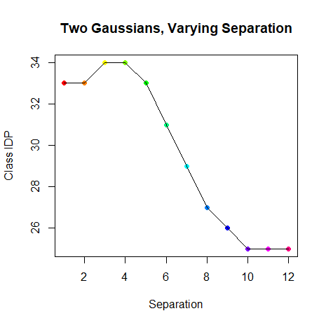 |
The overall trend is clear: as the separation between clusters decreases, the class IDP becomes inflated compared to the value that would be obtained if we carried out the perplexity calculations on the cluster in isolation. The increase in CIDP for separations 3-4 compared to 1-2 is probably just noise and can be ignored: the same results (but without the increase in class IDP) are seen for the blue cluster.
A similar trend is seen if the 100D Gaussians are replaced with 10D Gaussians, the only difference being that the separation at which the clusters stop affecting the CIDP is lower.
The effect isn’t massive on this dataset, but the take-away here is that even in this simple case of two Gaussian clusters, the presence of other data can affect the class IDP. With real datasets, we should expect overlap involving multiple clusters, and the class IDP values will therefore likely be larger than is optimal.
Three Clusters
As mentioned in the previous discussion on global IDP and elsewhere, the three clusters example in How to Use t-SNE Effectively is an interesting dataset because despite its simplicity (three Gaussian clusters in a line, two close together, one relatively distant), there isn’t a choice of perplexity that reproduces the global topology without distorting the Gaussian shapes of the individual clusters. The discussion in “How to Use t-SNE Effectively” suggests that a solution to the problem might be found in non-global perplexities.
I don’t know if that’s really the problem with the three clusters, but we could look to see if the class intrinsic dimensionalities are very different from the global versions.
Below on the left is the PCA of the three clusters as a reminder of the basic layout of the data (although the Gaussians are 50-dimensional). On the right are the class dimensionalities.
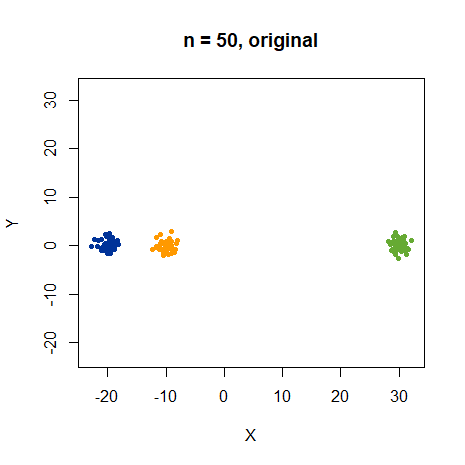 |
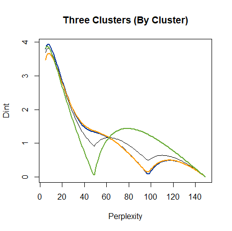 |
Not much changes at low perplexity. Even the blue and yellow cluster aren’t close enough to perturb each other very much. The yellow cluster values suggest that the class IDP for that cluster is 8, while the other two still suggest a value of 7. So the only change that splitting the global dimensionality into per-class contributions achieves is that for one-third of the dataset only, the IDP is one higher than it would be otherwise.
Here are the t-SNE results using the class IDP, which I display to save you the effort of having to go and look at the t-SNE results in the previous discussion.
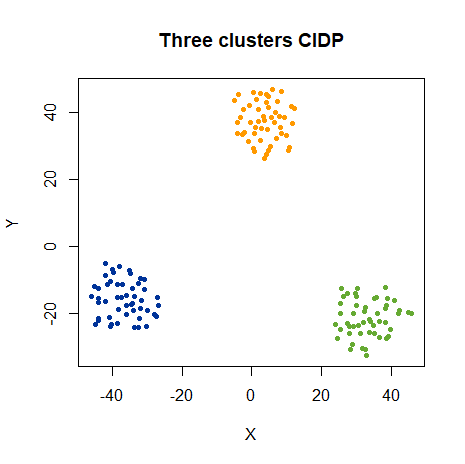 |
Unsurprisingly, we get the results that are pretty much indistiniguishable from if we had used a perplexity of 7 for all of the clusters.
At least if we take a look at the class dimensionality curves over the entire perplexity range plotted, we can see that the blue and yellow clusters are in a much more similar environment than the green one. This at least roughly accords with what we would expect, although no curve shows unambigious evidence of three clusters. The blue and yellow clusters have a “shoulder” at around perplexity 60 that is the other cluster, with the green cluster providing another maximum at perplexity 120. The green cluster is sufficiently distant from the blue and yellow clusters that they appear as a single broad distribution with a maximum at perplexity of around 80.
Does some combination of these other perplexities, corresponding to other maxima (or even the minima) yield the magical combination of perplexities that produces the “correct” layout? Sadly, the answer is no, but in a way that’s a relief. In more realistic datasets, with overlapping clusters of different sizes, dimensionality and spread, we aren’t likely to see useful structure at higher perplexity anyway.
At this point, I am about ready to throw the towel in on the three clusters and t-SNE, at least from the point of view of reproducing the global structure. I don’t think the problem is necessarily due to a global perplexity, anyway.
Class IDP: Real Data
Onto some real datasets. For each dataset there will be four plots, two dimensionality plots and two t-SNE plots. The left hand version of each image s the results from using the global IDP, and are the same images used in the previous discussion. They’re here for comparison with the right-hand images, which are all-new and use the class IDPs determined from the class dimensionality plots. As with the synthetic datasets, the color of the lines in the dimensionality plots matches the color of the cluster in the t-SNE plot.
Some of the datasets (oli and coil20 for
instance) contain a large number of different classes, so the class
dimensionality plots get pretty busy. I don’t expect them to have much
quantitative value, but by peering at different lines you should be able
to get some sense of how much variation there is in the IDP between
different classes.
iris
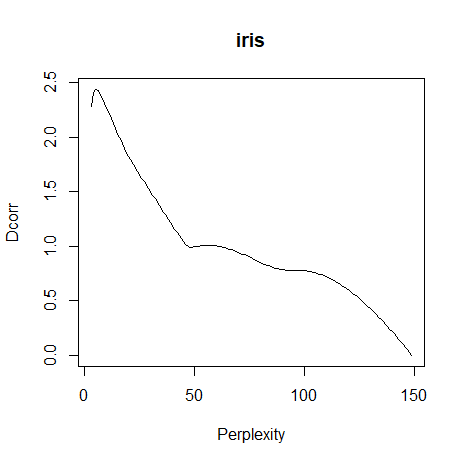 |
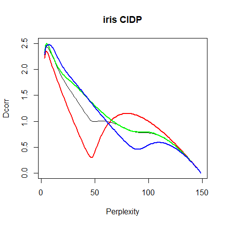 |
There’s an almost uncanny resemblance to the synthetic three clusters
data set dimensionality plot, we discussed above, although both datasets
do consist of three equal sized clusters so maybe I need to recalibrate
my sense of the uncanny. And like the synthetic three clusters, the
class IDPs do not differ very much from the global IDP. Data in the
setosa (red) and versicolor (green) clusters
still get a perplexity of 5, but a perplexity of 7 is found for
virginica (blue). Unsurprisingly, this has a minimal impact
on the t-SNE results:
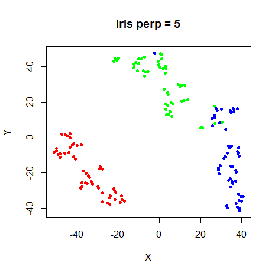 |
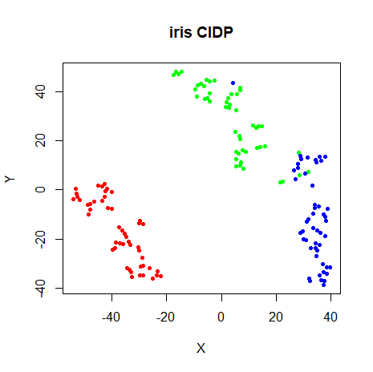 |
s1k
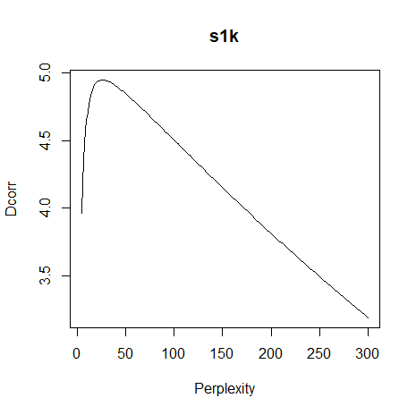 |
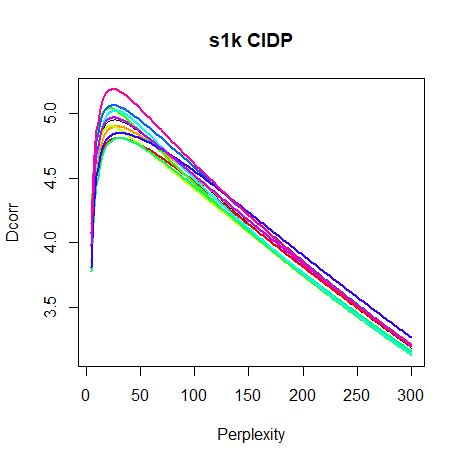 |
I didn’t expect to see much difference between the 10 clusters in
s1k: they are pretty much identical in terms of
composition, spread and relative distance. So it’s not to suprising that
their dimensionality curves are quite similar. The recommended global
perplexity for this dataset is 26, while the per-cluster
perplexities range from 22 to 31.
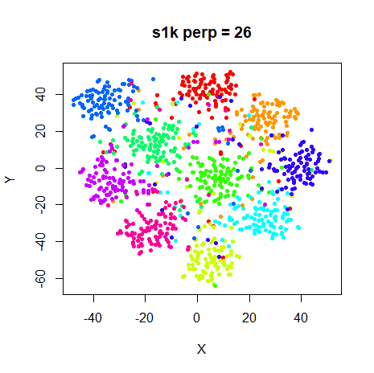 |
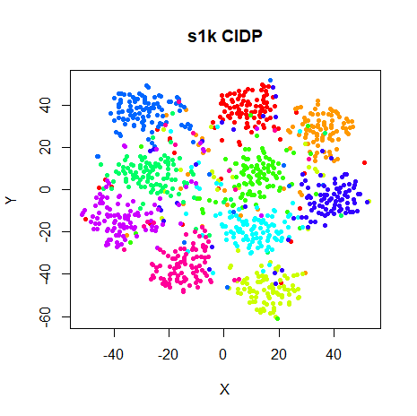 |
I would be hard-pressed to describe either of these plots as better than the other. We can at least say that the CIDP approach doesn’t do any major violence to the result.
oli
The Olivetti faces contain 40 different classes. There’s no good way to show 40 different curves, so let’s just take a deep breath and get through this together:
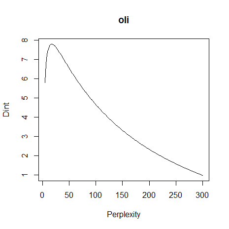 |
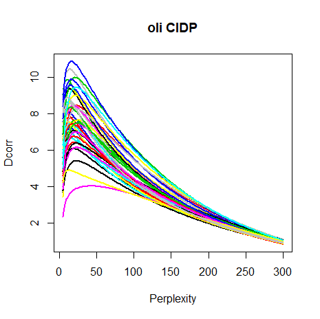 |
I won’t be getting a Christmas card from the Society for Intelligible Images for this one. But there is a bit of an indication that the different sets of faces show different dimensionalities: compare the bottom three curves (in purple, yellow and black) with the top blue curve for example. And intriguingly there is an interesting spread of perplexities: between 11-22, except for face number 22, where a perplexity of 42 is suggested. The average over the entire dataset is 17.
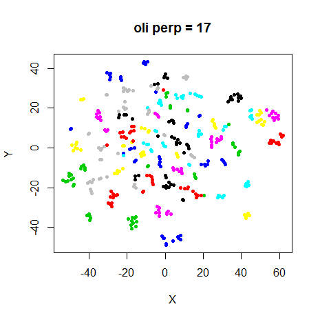 |
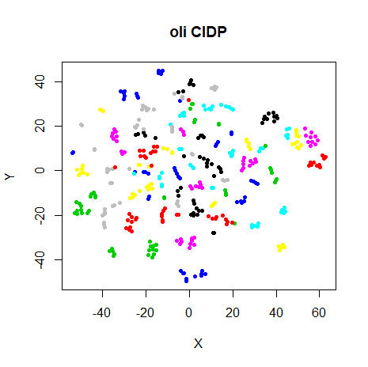 |
The perplexity = 17 result gives a perfectly good visualization. And so does the per-category result, to the extent that it’s quite hard to spot any meaningful differences between the two.
coil20
The COIL-20 dataset is my great hope for the utility of class IDP because it was the only one from the previous look at global IDP where the dimensionality plot suggested there was some extra structure that was obscured by averaging over the entire dataset, as you can see from the plot below on the left. The plot on the right shows the class dimensionalities:
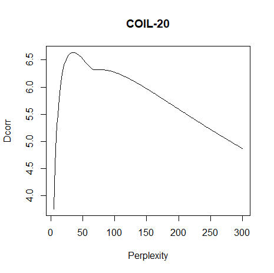 |
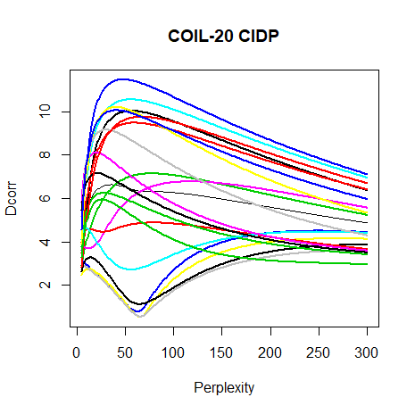 |
The class dimensionality curves are not as hard to distinguish as
with the oli dataset and do seem to show quite a spread of
intrinsic dimensionalities. And even more so than oli, the
different classes do seem to have quite a spread of IDP: from 6 to 77.
Surely, this would be one dataset where using different perplexities
would help?
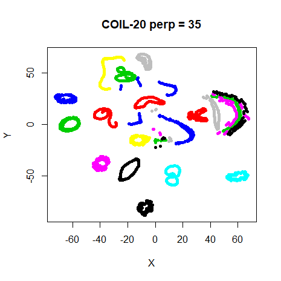 |
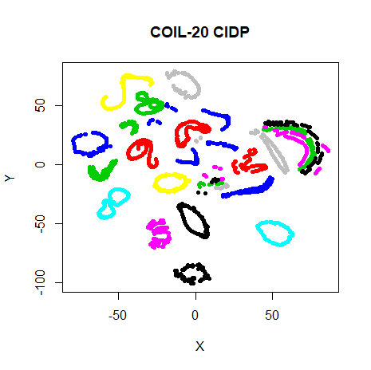 |
Results are at least different for CIDP, but I wouldn’t call it better. Based on the discussion of the effect of separation in the “Two Gaussians” section, this seems like a very likely candidate for a case where the CIDP values have been inflated by the presence of multiple overlapping clusters. And with the COIL-20 clusters having an obvious ring-like structure, the distoring effect is particularly obvious.
mnist
The global IDP for mnist6k was an unusually large value
of 115. Are all the CIDPs similarly large?
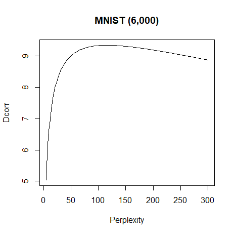 |
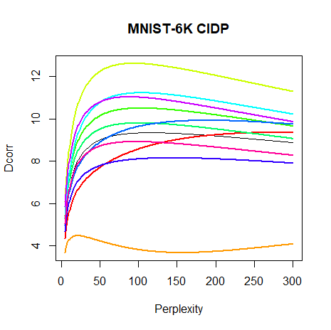 |
All except the 1 class (the orange cluster on the right
hand side of the t-SNE plots) have IDPs substantially larger than the
usual high end value of 50. The 1 cluster has an IDP of 21.
The next largest is the 8 cluster (purple cluster
top-middle) at a perplexity of 88, a big jump. The largest CIDP is for
the 0 cluster (red cluster on the left of the plot) which
has an IDP of 287. I detect no particular relationship between the CIDP
values and the location or shape of the clusters in the t-SNE plot.
Anyway, let’s see what happens when the CIDP values are used in
t-SNE:
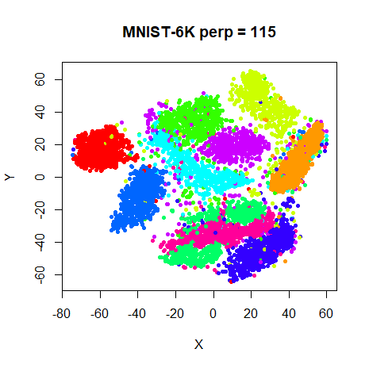 |
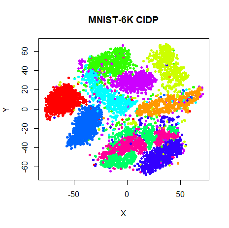 |
Again, no huge difference, but I think I prefer the GIDP version.
fashion
fashion6k showed a much smaller GIDP than
mnist6k. I expect the same trend for the CIDPs:
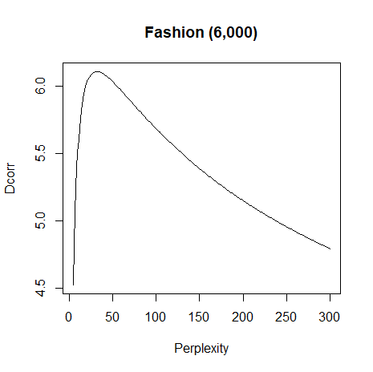 |
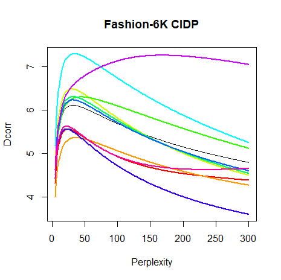 |
On a per-category basis, most of the categories also have typical perplexities suggested, ranging from 22 to 44. Class 8 (the ‘bag’ class, the top purple cluster in the plots below) is the one outlier, where the maximum dimensionality corresponds with a perplexity of 168. It’s normally well-separated from the other classes, although class 1 (‘trouser’, the orange cluster at the bottom) is also well separated, but it has a perplexity of 36.
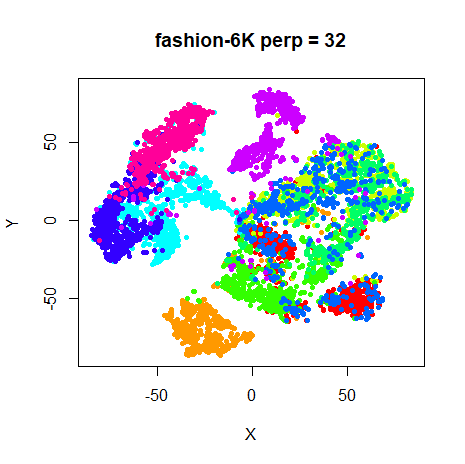 |
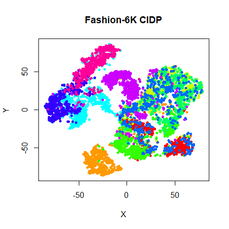 |
Class IDP: Conclusions
After looking at global IDP, I was vaguely optimistic about its use, but thought that looking at non-global perplexities would improve matters further. This has turned out not be the case at all. At least using the method here, which I already considered to be a best-case scenario and not a practical solution, at best things didn’t change much, and at worst, the t-SNE results got a bit messier. I don’t rule out the possibility that non-global perplexities are useful in t-SNE, it just doesn’t seem that class IDP values are the way to get there.
Probably the presence of the other clusters, “sensed” through the perplexity calculation, as noted in the “Two Gaussians” results, has distorted the IDP values and made them too large, encouraging overlap of different clusters.
Subset IDPs
A way to cure the problem of overlapping clusters inflating the IDP is to split the dataset into classes before carrying out the correlation dimension calculation. A normal global IDP calculation can then be carried out per class. To differentiate between the class IDP and this one, I am arbitrarily dubbing this method “Subset IDP”.
We could write out all the equations again, but really thinking of it as splitting the datasets into independent subsets, and calculating the global IDP for each subset is the easiest way to think of it.
Below, we’ll compare the class IDP plots with the subset IDP plots, and the resulting t-SNE plots.
iris
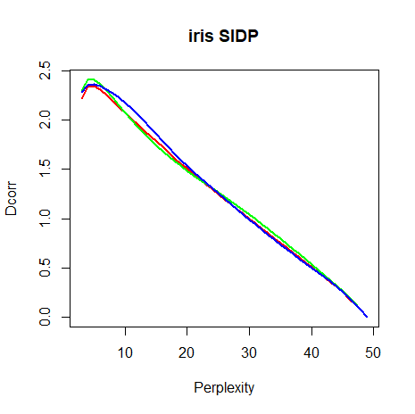 |
|
The iris clusters are sufficiently separated that the
subset IDP doesn’t have much effect compared to the class IDP. A
perplexity of 5 for is suggested for all species, whereas the class IDP
suggested a class IDP of 7 for virginica (the blue cluster). As a result
the t-SNE results are very similar.
s1k
Subset IDPs for s1k are Perplexity of 8-10, much reduced
from the 22-31 range with class IDPs. No huge effect on the t-SNE
results, although the SIDP results show clusters with slightly less
uniform distribution, which is to be expected with lower
perplexities.
oli
The structure of oli is that there are 40 different
faces with 10 images per face. So there are 40 classes with only 10
members for class. Hence the perplexity can’t higher than 9. Whereas for
other datasets it’s reasonable to only look at integral perplexities,
for oli, I looked at increments of 0.1. The range of SIDP
was 2.2-4.1, a good deal less than the class IDP range of 11-42. The
effect on the t-SNE plot is quite interesting. The overall shape is
still the same, but the clusters look a lot more compressed.
coil20
The subset IDPs range from 6-17, much reduced from the class IDP results, which ranged from 6-77. The reduced perplexity definitely helps with the t-SNE results, where more of the clusters retain a circular shape and the overall layout looks neater.
mnist
Subset IDPs tange from 19-28. The 1 class still has the
lowest perplexity of all the digits, but the 0 class, which
had a class IDP of over 200, has a much more reasonable subset IDP of
25. The t-SNE results aren’t hugely affected, but the mixing of the
4 (green) and 9 (purple) clusters at the
bottom of the plot might be slightly preferred with the SIDP result.
fashion
Subset IDPs range from 15-25. The class IDPs for
fashion6k were all fairly reasonable (between 22-44),
except for, class 8 (the bag class, purple cluster top
center of t-SNE plot), which had an anomalously high CIDP (compared to
the other classes) of 168. Using SIDP, it’s the cluster with the lowest
perplexity of 15. I mildly prefer the SIDP t-SNE plot, mainly because
class 0 (representing T-shirts/tops, the red cluster on the
right) is more contiguous.
Conclusions
In a lot of cases, the subset IDPs improve over class IDPs, although
comparison with the global IDP
results suggests only marginal improvements: the coil20
and fashion results seem to benefit from the SIDP
treatement. For the smaller datasets (particularly, iris
and oli and perhaps s1k), the perplexities are
a little low based on looking at the t-SNE plot. This can be ameliorated
by using a different output weight, as in heavy-tailed SSNE, at the cost of speed.
The requirement to partition the dataset into classes before applying t-SNE is an annoyance that limits the usefulness of both SIDP and CIDP. It would be much nicer if the input weight matrices available for each perplexity could be used for clustering the data, although if the number of clusters had to be specified, that would just be swapping one manually-chosen parameter for another.
The use of local IDPs would get around all that, but as we’ve seen, the raw values are noisy, even in simple synthetic data like the Swiss Roll. Averaging using k-nearest neighbors (where k could be related to the perplexity) might help here, but my initial experiments showed that for the Swiss Roll, k had to be a significant proportion of the dataset (around 10%) around points that where the effect of random clumping produced anomalously large perplexities that were the root cause of the folding of the roll.
I don’t rule out the value of non-global perplexities (although I grow more skeptical of them helping with the three clusters dataset), but it would seem from all of the results we’ve looked at here, that an approach rooted in intrinsic dimensionality will need some modifications to provide a consistent improvement.